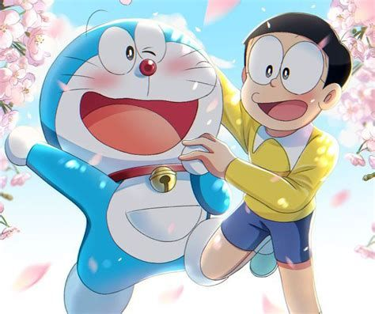
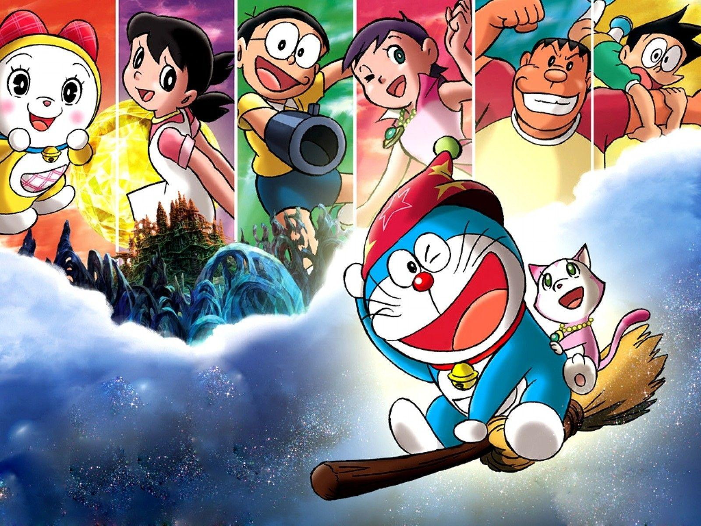

"Doremon"is a japanese manga and anime series created by Fujiko F.Fujio. It has become oneof the most beloved and enduring franchises in the world of japanese animation


premise:Doremon is a robotic cat from the 22nd century who travels back in time to help a young boy names Nobita Nobi.
Nobita Nobi struggles with various problems in the daily life,and Doremon uses futuristic gadgets from his four-dimensional pocket to help him
Main characters:
Doremon: The blue robotic cat who is kind,helpful,and equipped with gadgets.
Nobita Nobi: A lazy and clumsy boy who often faces trouble and relies on doremon's help.
Shizuka Minamoto: Nobita's kind and intelligent friend , whom he has crush on.
Takeshi Gouda:Nobita's bully,who often causes trouble.
Suneo Honekawa:Gian's sidekick,who is cunning and boastful